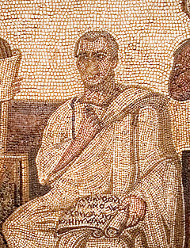
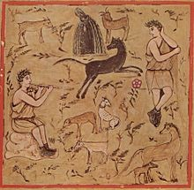

云英语
云英语：因学术而改变

维吉尔Virgil是古罗马的伟大诗人，奥古斯都年代人，他因三部作品闻名后世，分别是Eclogues《牧歌》，Georgics《农事》和Aeneid《埃涅阿斯纪》。
其中Aeneid《埃涅阿斯纪》讲述英雄Aeneas败走特洛伊，远走罗马建国的故事。虽仿荷马史诗体制，但不同的是，Aeneid是第一部“人造”史诗，因而在文学史上留下了不朽的一笔，自然成为了罗马的国诗。后世但丁自称深受其影响，他在《神曲》中甚至虚构情节讲述维吉尔对自己的指引。
而Eclogue《牧歌》在古希腊语中意为selection，即“精选集”，收六音步田园诗10首，因其中有对话诗节，也约略有些dialogue的影子[注：log-与lect-同源“择言而说->道”]。有学者称Virgil之所以会创作Eclogues是为了靠诗歌赢回在战乱(the Battle of Philippi)中被充公分给兵士的祖产土地，呵呵。
最后说到Georgics《农事》[注：Georgics=ge（“土地”）-org(work)-ics]，《农事》是维吉尔应支持奥古斯都（反对安东尼）的文学赞助商Maecenas之要求创作而成，全书共4部，分别讲“种庄稼种树(1)”，“养牛养马(2)(3)”和“养蜂(4)”。我们上课讲oscillate（“振荡/摇摆”<*os-=mouth），说此词从“嘴脸”到“摇摆”的词义转变与维吉尔的Georgics有关，并提到了相应段落。回顾如下：
[Latin原本385]
Ausonii, Troia gens missa, coloni
uersibus incomptis ludunt risuque soluto,
oraque corticibus sumunt horrenda cauatis,
et te, Bacche, uocant per carmina laeta, tibique
oscilla ex alta suspendunt mollia pinu.
[对词]
ausonii东方人（罗马人）-aurora极光-Eos黎明女神-east东方-Ostrogoth东哥特<*aus-=shine[黎明->东方] [注：因Aeneas从东方Troy来，创建罗马，故名东方人]
Troia-Troy特洛伊
gens部落宗族-generate产生-kind种类-gentle温文尔雅[同是名门望族]<*gen-=give birth
missa出-mission使团-missile导弹<mit-<miss-=let go
coloni殖民者-colonist殖民者
uersibus诗歌-verse诗歌<*wer-=turn
incomptis不齐的-example例子-prompt迅速的<empt<-*em-=take/buy
ludunt玩-prelude前奏<lud-=play
risu笑-risible可笑的<-ridiculous可笑的<rid-/ris-=laugh
que和=and
soluto放荡-solve解开-dissolute放荡的<solv-=release<*se-lu=loose apart
ora脸-oral口<*os-=mouth
corticibus皮-cortex皮质-short短-scar疤<*sker-=cut
sumunt拿-consume消耗<sum-=take<*sub-em=take
horrenda可怕的-horrible
cauatis空的-cave洞
et和=and
te你-thou你
Bacche酒神巴克斯-Bacchus酒神巴克斯
uocant喊-voice
per=through
carmina歌=charm魔咒/魅力
laeta=cheerful
tibi你-thou你
oscilla小面具-oral口
ex=(out) from
alta高-altitude高度
suspendunt悬挂-suspend悬挂
mollia柔软的-mollify软化
pinu松树-pine
[英译]
And the Romans, people who came from Troy, colonists,
They play with rough verses and unrestrained laughter,
And wear frightening faces made of hollow barks,
And they call you, Bacchus, with cheerful songs, and for you
They hang small quivering face-figurines from the tall pine.
――Diego
诗中最后说“他们把柔软（晃荡）的小面具挂在高高的松树上”，或许从此oscilla“小面具”（单数主格oscillum）产生出了“摇摆之物”的含义，从而有了动词oscillare“振荡/摇摆”，最终至现今英文中oscillate“振荡/摇摆”。我们能有electromagnetic oscillation“电磁振荡”的说法，一切拜维吉尔所赐……
罗马诗人维吉尔
版权所有 2011-2015 北京云英一语教育咨询有限公司 Y-English All Rights Reserved
地址：北京市海淀区五道口华清嘉园商务会馆802
电话：400-876-3898 010-82863898 82863899 传真：010-82863897